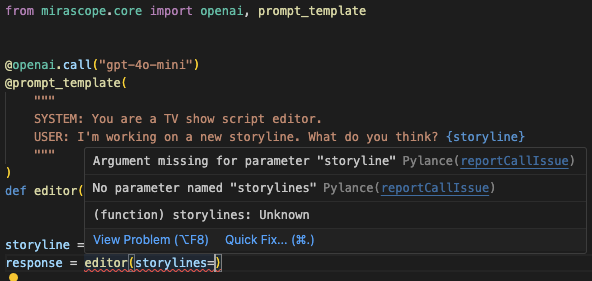

8 Prompt Engineering Best Practices and Techniques¶
Eliciting the best answers from Large Language Models (LLMs) begins with giving them clear instructions. That’s really the goal of prompt engineering: it’s to guide the model to respond in kind to your precise and specific inputs. Prompt engineering done right introduces predictability in the model’s outputs and saves you the effort of having to iterate excessively on your prompts.
In our experience, there are two key aspects to prompting an LLM effectively:
-
The language employed should be unambiguous and contextually rich. The more an LLM understands exactly what you want, the better it’ll respond.
-
Beyond the language used, good software developer practices such as version control, ensuring the quality of prompt inputs, writing clean code, and others, help maintain a structured and dependable approach.
Of course, a “pre-step” to consider is the prompt development life cycle as a whole. Prompt engineers should define the stages of this life cycle in terms of key metrics and specify success criteria for evaluating LLM outputs. However, at present we won’t be considering such aspects of the life cycle,but rather what it takes for writing (and coding) prompts to coax better results from the model.
Besides accuracy, “better” also means results that are reliable, especially taking into account how inconsistent language model outputs can be—even when using the same model with the same inputs. This is where best practices can help you achieve some baseline of consistency in LLM responses. In this article, we share our insights for helping you generate predictable LLM responses.
These insights are grounded in our own experiences writing prompts since the earliest days of the OpenAI SDK, when we developed our guiding principles in response to our frustrations working with complex frameworks for developing LLM applications.
These principles eventually coalesced into our own Python toolkit for building with LLMs, Mirascope. We illustrate our list of prompt engineering best practices below with some examples of how you would implement these in our toolkit.
- Provide a clear context
- Use tailored prompts, not predefined templates
- Use chain of thought prompting rather than “flat,” broad prompts
- Prompt initially without examples, then provide examples to refine the prompt
- Adjust the
temperatureortop_pparameters as necessary - Colocate parameters and code with the LLM call
- Validate prompt inputs for data integrity
- Place prompts under version control
Prompting Best Practices for Getting Better Results from the LLM¶
Below are some recommendations for getting better results from your prompt engineering workflows.
1. Provide a Clear Context¶
Set the stage for your request by providing as many relevant details as possible to help the model understand your intent.
LLMs learn to predict the next word in a sequence based on patterns they’ve encountered in training data, a prediction heavily influenced by the context provided in the input. Without enough context, the model has less information to base its predictions on, which can lead to misunderstandings or irrelevant outputs.
As well, natural language can be ambiguous, with many words and phrases having different meanings depending on the context. For example, the word “bank” can refer to a financial institution or the side of a river. Without clear context, the model might choose an incorrect meaning, resulting in irrelevant or incorrect responses.
So for example, rather than prompting with a one-liner like:
Include background information, along with specific requirements or constraints:
“I’m a second-year college student who struggles with retaining information from my lectures and reading material. I find it hard to remember key concepts during exams. What are the best techniques for improving my memory to enhance my study habits and exam performance?”
For chat interactions, specifying different roles in prompts adds context. For instance, distinguishing between the system's instructions and the user's input helps the model differentiate between directive information and conversational content:
from mirascope.core import openai, prompt_template
@openai.call(model="gpt-4o-mini", call_params={"temperature": 0.4})
@prompt_template(
"""
SYSTEM:
You are a world-renowned chef.
USER:
I need a new recipe idea for dinner. Here are the ingredients I have:
{ingredients:list}
"""
)
def recommend_recipe(ingredients: list[str]): ...
ingredients = ["chicken", "garlic", "spinach", "mushrooms"]
response = recommend_recipe(ingredients=ingredients)
print(response.messages)
# > [{'role': 'system', 'content': 'You are a world-renowned chef.'}, {'role': 'user', 'content': 'I need a new recipe idea for dinner. Here are the ingredients I have:\nchicken\ngarlic\nspinach\nmushrooms'}]
print(response.content)
# > How about garlic chicken with spinach and mushrooms? Here's a simple recipe...
2. Use Tailored Prompts, Not Predefined Templates¶
By their very nature, reusable prompt templates that are designed for one context don’t port easily to others. There are a few reasons for this:
- LLMs are highly sensitive to the actual inputs used in a prompt—that is, everything from the words, phrases, style, and tone, to implicit assumptions, data points, structure, and formatting. Reusing the same prompt template in another context can generate unexpected LLM outputs.
- LLMs don’t maintain state across interactions outside of the current context window, so each prompt-response pair is treated independently without memory of previous exchanges unless they are within the same context window. This means that every prompt within a new interaction or outside of the current context window needs to be self-contained and provide all necessary context to ensure accurate and reliable responses.
The fact there’s little to no reusability with the current generation of LLMs means that modern prompt engineering (still) has little use for automation—even with templates. Case in point: some libraries make much of their use of directed acyclic graphs yet the vast majority of prompting work still lies in iteratively optimizing effective prompts by hand until you get the desired result.
3. Use Chain of Thought (CoT) Prompting Instead of “Flat,” Broad Prompts¶
LLMs generally don’t handle long, complex prompts (or even simple, broadly defined ones) very well, partly because they don’t inherently know which parts are most important unless guided by the prompt structure, so they might struggle to determine which details to prioritize.
The result is often outputs that are jumbled or fail to address all aspects of the prompt adequately.
They’re better at handling explicit instructions than implicit ones, so when a prompt includes implicit tasks, the model may not effectively infer all the intended actions or responses, leading to incomplete or incorrect outputs.
Our advice is to use CoT prompting, or decompose such prompts into smaller, more explicit steps, asking the model to provide a response for each of these steps, sequentially, in building up to the final response.
This allows the LLM to break up its response into intermediate responses, letting it reason more deeply about the task before it arrives at its final answer.
This prompt, for example, appears to be simple:
Yet it might not give you as satisfying a response as if you had broken it down into sub-steps:
1. First, list the main types of renewable energy sources available today.
2. Next, for each type, provide a brief description of how it works.
3. Compare each of the options in terms of energy production and installation costs.
4. Discuss the environmental impacts of using each option compared to the other.
Note that with CoT prompting, you’re breaking down tasks within the same prompt and sending everything in a single LLM call.
4. Prompt Initially Without Examples, Then Provide Examples to Refine the Prompt¶
Not including examples (or zero-shot prompting) lets you gauge the model’s baseline response to identify gaps or misconceptions it might have about a task.
You then introduce examples (referred to as few shot prompting) to guide the model towards more accurate or contextually appropriate AI responses. Examples serve as a form of in-context learning, where the model learns from the patterns demonstrated by the examples. This helps it align its responses with the specific format, style or content you’re looking for.
For example, you start out with a zero-shot prompt and assess the response:
Before introducing examples for clarity:
Summarize the articles listed below.
Article 1: The global economy is currently experiencing unprecedented challenges as nations worldwide grapple with high inflation rates, significant disruptions in global supply chains, and escalating geopolitical tensions across various regions. Financial experts are closely monitoring these developments and predict that these factors will likely result in increased market volatility, with potential impacts on international trade and investment flows in the upcoming quarters.
Summary 1: The global economy faces challenges like high inflation, supply chain disruptions, and geopolitical tensions, which are expected to increase market volatility and affect international trade and investments.
Article 2: Recent advances in artificial intelligence technology like ChatGPT and other chatbots have paved the way for developers to construct more sophisticated machine learning models and AI tools, which are significantly enhancing the capabilities of data processing systems. These AI models are not only streamlining complex data analysis tasks and other use cases but are also increasingly being integrated into various business sectors to improve decision-making processes, optimize operations, and drive innovation in ways previously unimagined.
Summary 2: Recent advances in generative AI have resulted in sophisticated machine learning models that enhance data processing and decision-making across various business sectors, leading to increased operational efficiency and innovation.
Article 3: {article}
Summary 3:
5. Adjust the temperature or top_p Parameters As Necessary¶
These optional LLM parameters allow you to experiment with model outputs by fine-tuning their randomness and diversity of model responses.
You can set the temperature as a range between 0 and 1 (though you can go up to 2), to adjust the probability distribution of the next word in the sequence. This is more commonly modified than top_p and dictates how deterministic the model should be when generating text:
- Lower values (e.g., 0.1) will make the model choose the most likely next word leading to a predictable and repetitive response. This is useful for complex tasks requiring precision and consistency.
- Higher values (e.g., 0.9) increase randomness by flattening the probability distribution, meaning less probable words will more likely be chosen than with a lower temperature setting. This generates more creative and diverse responses, which is useful for creative writing or brainstorming.
You set top_p in a range between 0 and 1 to control the diversity of the model's desired output:
- Lower values (e.g., 0.1) will make the model only consider the top 10% of probable next words, leading to more deterministic and focused responses.
- Higher values (e.g., 0.9) will make the model consider the top 90% of probable next words, allowing for a wider variety of choices and more diverse outputs.
You can include either of these parameters individually (but not at the same time) in your LLM call, for example:
This example uses a moderately high temperature to introduce some randomness with less probable words. We generally recommend not modifying top_p unless you have a specific understanding of this parameter and have a need to change it.
If you don’t specify these parameters in your call, then the model assumes certain defaults (e.g., Open AI sets the default value of both parameters at 1).
6. Colocate Parameters and Code with the LLM Call¶
We find that making the LLM call the central organizing unit around which everything, including the prompt, gets versioned and tested promotes code cleanliness and maintainability.
It also properly defines the boundaries of modules, ensuring that each is self-contained and encapsulates all the elements necessary for its functionality.
You can find examples of colocation throughout our library:
from mirascope.core import openai, prompt_template
@openai.call(model="gpt-4o-mini", call_params={"temperature": 0.9})
@prompt_template("Provide the current weather for {location}")
def report_weather(location: str): ...
response = report_weather(location="San Francisco")
print(response.content) # prints the string content of the call
print(response.call_params) # prints the call parameters of the call
With Mirascope, all call parameters are colocated with the call and easy to access from the response.
7. Validate Prompt Inputs for Data Integrity¶
Eliminating prompt errors from the start ensures that the data going into the language model is both accurate and reliable, avoiding issues that can arise from malformed or unexpected results.
We recommend building error-checking boilerplate into your workflows to automatically catch errors that may otherwise go silently into the LLM using libraries like Pydantic to provide reliable data validation.
In the case of Mirascope, since everything is written as functions you can tatke advantage of Pydantic's validate_call decorator to ensure prompt arguments adhere to their defined types.
This is especially useful if you’re using a code editor, where we display warning and error messages and offer autocomplete suggestions.
For example, storyline is defined in the editor prompt method below:
from mirascope.core import openai
@openai.call("gpt-4o-mini")
@prompt_template(
"""
SYSTEM: You are a TV show script editor.
USER: I'm working on a new storyline. What do you think? {storyline}
"""
)
def editor(storyline: str): ...
storyline = "..."
response = editor(storyline)
If you try to pass an incorrect name like storylines using an IDE, it’ll flag the error:

8. Place Prompts Under Version Control¶
Versioning your prompts may seem like an intuitive step to anyone who’s done serious prompt engineering, but we’d like to repeat this anyway. And if this isn’t standard practice yet, you’ll thank us later for it.
In our experience, prompts become unmanageable past several iterations if we don’t version track them as we would any other code. And if you’re rapidly experimenting with, and optimizing prompts, even manual change tracking is better than none at all.
Our own library Lilypad is purpose build for prompt management, automatically versioning and tracing every LLM call made, including any and all code that could impact the quality of the prompt.
Use Advanced Prompt Engineering Techniques¶
Mirascope's LLM application development toolkit, grounded in software development best practices, supports scalability and collaboration with a heavy focus on improving LLM API interactions all the way down to editor support and autocomplete.
Mirascope offers building blocks rather than a framework so design decisions can remain in the hands of developers. Lilypad, on the other hand, offers a more framework driven approach for additional supporting tooling for prompt engineering, and it offers first-class support for Mirascope.
Want to learn more? You can find more Mirascope code samples on both our documentation site and on GitHub.